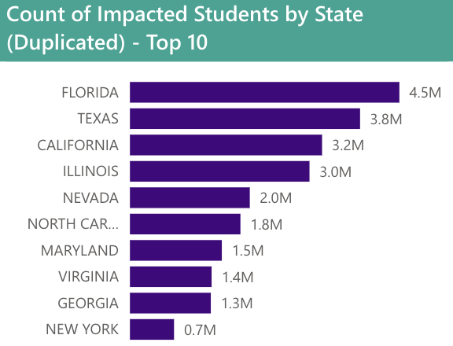
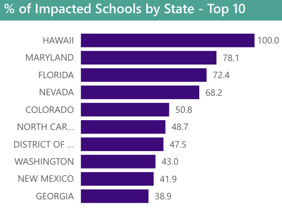

The Numbers: Cybersecurity Incidents Across the United States K-12 Education Sector
The following charts provide a snapshot* of cyber incidents that occured in K-12 districts between 2016-2022
(*Each state has their own laws regarding cybersecurity incident disclosure requirements. As such, this represents reported counts and may not reflect the true occurance of cyber incidents.)




Sources:
The State of K-12 Cybersecurity Report Series — K12 SIX.
(n.d.). K12 SIX. https://www.k12six.org/the-report